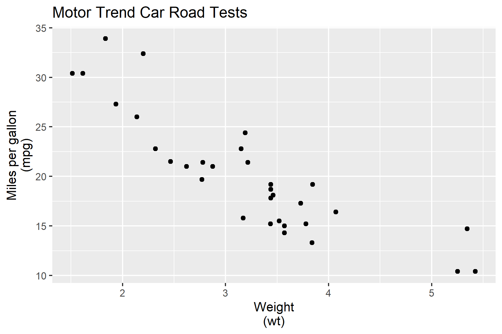
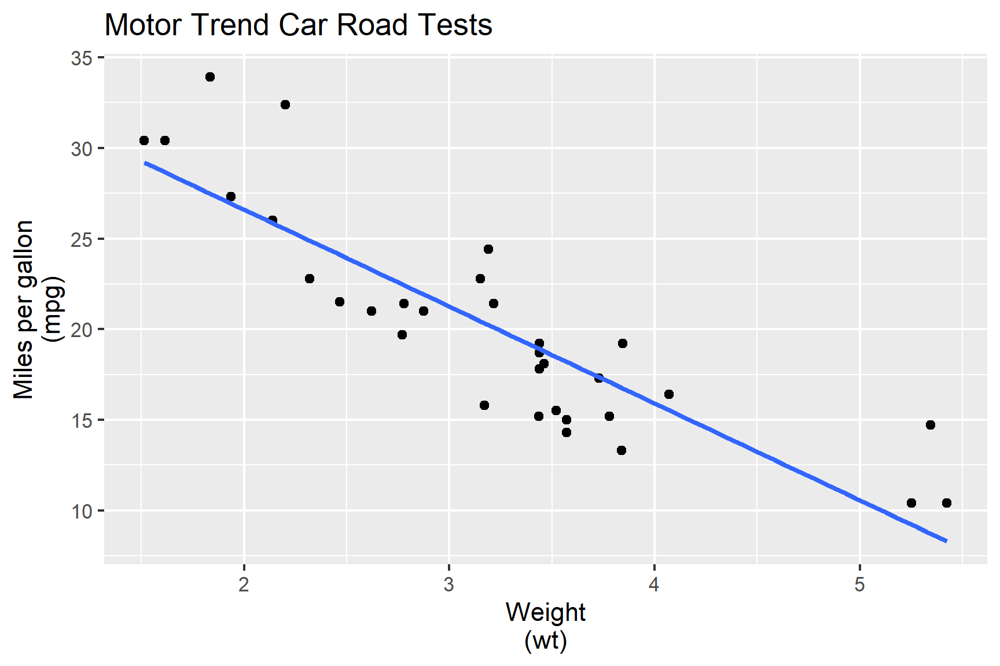

Lecture 5A: Statistical model outputs
Aim
- Extract information from model objects
- Understand and create functions in R
- Understand and apply S3 object-oriented programming in R
Why
- Working with model objects is necessary for you to get the information you need for communication
- These concepts will be helpful later when we start developing R-packages
📈 Statistical models
- All models are approximations of the unknown data generating process
- How good of an approximation depends on the collected data and the model choice
🎯 Characterise mpg in terms of wt.
- We fit the model:
\[\texttt{mpg}_i = \beta_0 + \beta_1\texttt{wt}_i + e_i\]
Parameter details
- \(\texttt{mpg}_i\) is the miles per gallon of the \(i\)-th car,
- \(\texttt{wt}_i\) is the weight of the \(i\)-th car,
- \(\beta_0\) is the intercept,
- \(\beta_1\) is the slope, and
- \(e_i\) is random error, usually assumed \(e_i \sim NID(0, \sigma^2)\)
Fitting linear models in R
\[\texttt{mpg}_i = \beta_0 + \beta_1\texttt{wt}_i + e_i\]
In R we fit this as
fit <- lm(mpg ~ wt, data = mtcars)which is the same as
fit <- lm(mpg ~ 1 + wt, data = mtcars)
fit
Call:
lm(formula = mpg ~ 1 + wt, data = mtcars)
Coefficients:
(Intercept) wt
37.285 -5.344 \(\hat{\beta}_0 = 37.285\) and \(\hat{\beta}_1 = -5.344\)

ℹ️ Extracting information from the fitted model
- When you fit a model, there would be a number of information you will be interested in extracting from the fit including:
- the model parameter estimates,
- model-related summary statistics, e.g. \(R^2\), AIC and BIC,
- model-related values, e.g. residuals, fitted values and predictions.
- So how do you extract these values from the
fit? - What does
fiteven contain?
str(fit)List of 12
$ coefficients : Named num [1:2] 37.29 -5.34
..- attr(*, "names")= chr [1:2] "(Intercept)" "wt"
$ residuals : Named num [1:32] -2.28 -0.92 -2.09 1.3 -0.2 ...
..- attr(*, "names")= chr [1:32] "Mazda RX4" "Mazda RX4 Wag" "Datsun 710" "Hornet 4 Drive" ...
$ effects : Named num [1:32] -113.65 -29.116 -1.661 1.631 0.111 ...
..- attr(*, "names")= chr [1:32] "(Intercept)" "wt" "" "" ...
$ rank : int 2
$ fitted.values: Named num [1:32] 23.3 21.9 24.9 20.1 18.9 ...
..- attr(*, "names")= chr [1:32] "Mazda RX4" "Mazda RX4 Wag" "Datsun 710" "Hornet 4 Drive" ...
$ assign : int [1:2] 0 1
$ qr :List of 5
..$ qr : num [1:32, 1:2] -5.657 0.177 0.177 0.177 0.177 ...
.. ..- attr(*, "dimnames")=List of 2
.. .. ..$ : chr [1:32] "Mazda RX4" "Mazda RX4 Wag" "Datsun 710" "Hornet 4 Drive" ...
.. .. ..$ : chr [1:2] "(Intercept)" "wt"
.. ..- attr(*, "assign")= int [1:2] 0 1
..$ qraux: num [1:2] 1.18 1.05
..$ pivot: int [1:2] 1 2
..$ tol : num 1e-07
..$ rank : int 2
..- attr(*, "class")= chr "qr"
$ df.residual : int 30
$ xlevels : Named list()
$ call : language lm(formula = mpg ~ 1 + wt, data = mtcars)
$ terms :Classes 'terms', 'formula' language mpg ~ 1 + wt
.. ..- attr(*, "variables")= language list(mpg, wt)
.. ..- attr(*, "factors")= int [1:2, 1] 0 1
.. .. ..- attr(*, "dimnames")=List of 2
.. .. .. ..$ : chr [1:2] "mpg" "wt"
.. .. .. ..$ : chr "wt"
.. ..- attr(*, "term.labels")= chr "wt"
.. ..- attr(*, "order")= int 1
.. ..- attr(*, "intercept")= int 1
.. ..- attr(*, "response")= int 1
.. ..- attr(*, ".Environment")=<environment: R_GlobalEnv>
.. ..- attr(*, "predvars")= language list(mpg, wt)
.. ..- attr(*, "dataClasses")= Named chr [1:2] "numeric" "numeric"
.. .. ..- attr(*, "names")= chr [1:2] "mpg" "wt"
$ model :'data.frame': 32 obs. of 2 variables:
..$ mpg: num [1:32] 21 21 22.8 21.4 18.7 18.1 14.3 24.4 22.8 19.2 ...
..$ wt : num [1:32] 2.62 2.88 2.32 3.21 3.44 ...
..- attr(*, "terms")=Classes 'terms', 'formula' language mpg ~ 1 + wt
.. .. ..- attr(*, "variables")= language list(mpg, wt)
.. .. ..- attr(*, "factors")= int [1:2, 1] 0 1
.. .. .. ..- attr(*, "dimnames")=List of 2
.. .. .. .. ..$ : chr [1:2] "mpg" "wt"
.. .. .. .. ..$ : chr "wt"
.. .. ..- attr(*, "term.labels")= chr "wt"
.. .. ..- attr(*, "order")= int 1
.. .. ..- attr(*, "intercept")= int 1
.. .. ..- attr(*, "response")= int 1
.. .. ..- attr(*, ".Environment")=<environment: R_GlobalEnv>
.. .. ..- attr(*, "predvars")= language list(mpg, wt)
.. .. ..- attr(*, "dataClasses")= Named chr [1:2] "numeric" "numeric"
.. .. .. ..- attr(*, "names")= chr [1:2] "mpg" "wt"
- attr(*, "class")= chr "lm"Accessing model parameter estimates
fit$coefficients(Intercept) wt
37.285126 -5.344472 # OR using
coef(fit)(Intercept) wt
37.285126 -5.344472 This gives us the estimates of \(\beta_0\) and \(\beta_1\).
But what about \(\sigma^2\)? Recall \(e_i \sim NID(0, \sigma^2)\).
sigma(fit)^2[1] 9.277398Summary of the model object
summary(fit)
Call:
lm(formula = mpg ~ 1 + wt, data = mtcars)
Residuals:
Min 1Q Median 3Q Max
-4.5432 -2.3647 -0.1252 1.4096 6.8727
Coefficients:
Estimate Std. Error t value Pr(>|t|)
(Intercept) 37.2851 1.8776 19.858 < 2e-16 ***
wt -5.3445 0.5591 -9.559 1.29e-10 ***
---
Signif. codes: 0 '***' 0.001 '**' 0.01 '*' 0.05 '.' 0.1 ' ' 1
Residual standard error: 3.046 on 30 degrees of freedom
Multiple R-squared: 0.7528, Adjusted R-squared: 0.7446
F-statistic: 91.38 on 1 and 30 DF, p-value: 1.294e-10Extract summary values
broom::tidy(fit)# A tibble: 2 × 5
term estimate std.error statistic p.value
<chr> <dbl> <dbl> <dbl> <dbl>
1 (Intercept) 37.3 1.88 19.9 8.24e-19
2 wt -5.34 0.559 -9.56 1.29e-10broom::glance(fit)# A tibble: 1 × 12
r.squared adj.r.squared sigma statistic p.value df logLik AIC BIC
<dbl> <dbl> <dbl> <dbl> <dbl> <dbl> <dbl> <dbl> <dbl>
1 0.753 0.745 3.05 91.4 1.29e-10 1 -80.0 166. 170.
# ℹ 3 more variables: deviance <dbl>, df.residual <int>, nobs <int>broom::augment(fit)# A tibble: 32 × 9
.rownames mpg wt .fitted .resid .hat .sigma .cooksd .std.resid
<chr> <dbl> <dbl> <dbl> <dbl> <dbl> <dbl> <dbl> <dbl>
1 Mazda RX4 21 2.62 23.3 -2.28 0.0433 3.07 1.33e-2 -0.766
2 Mazda RX4 Wag 21 2.88 21.9 -0.920 0.0352 3.09 1.72e-3 -0.307
3 Datsun 710 22.8 2.32 24.9 -2.09 0.0584 3.07 1.54e-2 -0.706
4 Hornet 4 Drive 21.4 3.22 20.1 1.30 0.0313 3.09 3.02e-3 0.433
5 Hornet Sportabout 18.7 3.44 18.9 -0.200 0.0329 3.10 7.60e-5 -0.0668
6 Valiant 18.1 3.46 18.8 -0.693 0.0332 3.10 9.21e-4 -0.231
7 Duster 360 14.3 3.57 18.2 -3.91 0.0354 3.01 3.13e-2 -1.31
8 Merc 240D 24.4 3.19 20.2 4.16 0.0313 3.00 3.11e-2 1.39
9 Merc 230 22.8 3.15 20.5 2.35 0.0314 3.07 9.96e-3 0.784
10 Merc 280 19.2 3.44 18.9 0.300 0.0329 3.10 1.71e-4 0.100
# ℹ 22 more rowsFunctions in
Revise about functions at Learn R
Functions in R
Functions can be broken into three components:
formals(), the list of arguments,body(), the code inside the function, andenvironment()
Functions in R are created using
function()with binding to a name using<-or=
f1 <- function(x) sum(x) / length(x)formals(f1)$xbody(f1)sum(x)/length(x)environment(f1)<environment: R_GlobalEnv>Function Example 1
f1 <- function(x) sum(x) / length(x)x1 <- c(1, 1, 2, 2)
f1(x1)[1] 1.5What if there are missing values in the vector or the values are dates?
x2 <- c(1, 1, 2, 2, NA)
f1(x2)[1] NAx3 <- as.Date(c("2021-08-04", "2021-08-11"))
f1(x3)Error in Summary.Date(structure(c(18843, 18850), class = "Date"), na.rm = FALSE): sum not defined for "Date" objectsFunction Example 2
f2 <- function(x, na.rm = TRUE) {
n <- sum(!is.na(x))
sum(x, na.rm = na.rm) / n
}f2(x1)[1] 1.5f2(x2)[1] 1.5f2(x3)Error in Summary.Date(structure(c(18843, 18850), class = "Date"), na.rm = TRUE): sum not defined for "Date" objectsFunction Example 3
f3(x1)[1] 1.5f3(x2)[1] 1.5f3(x3)[1] "2021-08-07"- What about for another object class?
x4 <- as.POSIXct(c("2021-08-11 18:00", "2021-08-11 20:00"), tz = "UTC")S3 Object oriented programming (OOP)
- The S3 system is the most widely used OOP system in R but there are other OOP systems in R, e.g. the S4 system is used for model objects in
lme4R-package, but it will be out of scope for this unit
class(x1)[1] "numeric"class(x2)[1] "numeric"class(x3)[1] "Date"class(x4)[1] "POSIXct" "POSIXt" - Here I create a generic called
f4:
f4 <- function(x, ...) UseMethod("f4")- And an associated default method:
f4.default <- function(x, na.rm = TRUE) {
sum(x, na.rm = na.rm) / sum(!is.na(x))
}- And an associated specific method for the
Dateclass:
f4.Date <- function(x, na.rm = TRUE) {
out <- f4.default(as.numeric(x), na.rm = na.rm)
as.Date(out, origin = "1970-01-01")
}f4(x1)[1] 1.5f4(x2)[1] 1.5f4(x3)[1] "2021-08-07"class(x4)[1] "POSIXct" "POSIXt" f4.POSIXct <- function(x, na.rm = TRUE) {
out <- f4.default(as.numeric(x), na.rm = na.rm)
as.POSIXct(out,
tz = attr(x, "tzone"),
origin = "1970-01-01")
}f4(x4)[1] "2021-08-11 19:00:00 UTC"- A method is created by using the form
generic.class. - When using a method for
class, you can omit the.classfrom the function. - E.g.
f4(x4)is the same asf4.POSIXct(x4)since the class ofx4isPOSIXct(andPOSIXt). - But notice
f4.numericdoesn’t exist, instead there isf4.default. defaultis a special class and when a generic doesn’t have a method for the corresponding class, it falls back togeneric.default
Working with model objects
in
Modelling in R
- There are many R-packages that fit all kinds of models, e.g.
mgcvfits generalized additive models,rstanarmfits Bayesian regression models using Stan, andfablefits forecast models,- many other contributions by the community.
- There are a lot of new R-packages contributed — some implementing the latest research results.
- This means that if you want to use the state-of-the-art research, then you need to work with model objects beyond the standard
lmandglm.
Example with Bayesian regression
library(rstanarm)
fit_stan <- stan_lm(mpg ~ 1 + wt, data = mtcars,
prior = R2(0.7528, what = "mean"))broom::tidy(fit_stan)S3 Object classes
So how do you find out the functions that work with model objects?
First notice the class of the object
fit:
class(fit)[1] "lm"- The methods associated with this can be found using:
methods(class = "lm") [1] add1 alias anova case.names coerce
[6] confint cooks.distance deviance dfbeta dfbetas
[11] drop1 dummy.coef effects extractAIC family
[16] formula fortify hatvalues influence initialize
[21] kappa labels logLik model.frame model.matrix
[26] nobs plot predict print proj
[31] qqnorm qr residuals rstandard rstudent
[36] show simulate slotsFromS3 summary variable.names
[41] vcov
see '?methods' for accessing help and source codeWhere is coef()?
Case study broom::tidy
class(fit)[1] "lm"broom::tidyfunction (x, ...)
{
UseMethod("tidy")
}
<bytecode: 0x00000286efd3e960>
<environment: namespace:generics>There is no tidy.stanreg method so uses the broom:::tidy.glm instead.
Case study broom::tidy
Working with model objects
- Is this only for R though?
- How do you work with model objects in general?
Python
#| output-location: fragment
import pandas as pd
import numpy as np
from sklearn.linear_model import LinearRegression
x = np.array(r.mtcars['wt']).reshape(-1, 1)
y = np.array(r.mtcars['mpg'])
model = LinearRegression().fit(x, y)
[model.intercept_, model.coef_]
(Intercept) wt
37.285126 -5.344472
Summary
- Model objects are usually a
listreturning multiple output from the model fit - When working with model objects, check the object structure and find the methods associated with it (and of course check the documentation)
- You should be able to work (or at least know how to get started) with all sort of model objects
- We revised how to create functions in R
- We applied S3 object-oriented programming in R